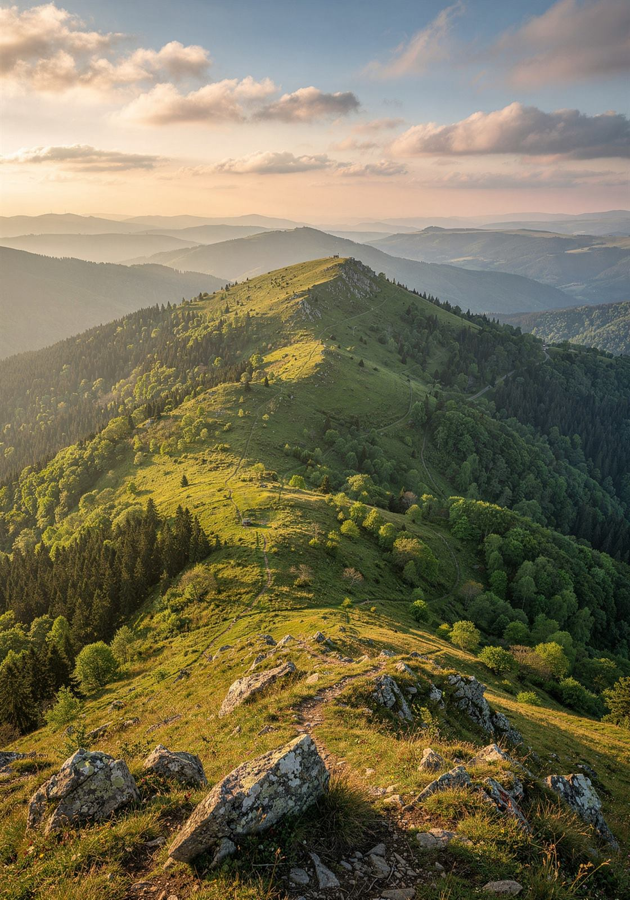

🌿 CHKO Bílé Karpaty
Poznej krajinu, druhy i příběhy Bílých Karpat
Bílé Karpaty jsou domovem světově unikátních květnatých luk, vzácných živočichů i rostlin. Prozkoumejte je s námi na kartách objevitele a vyzkoušejte, jak dobře je znáte v interaktivním kvízu.
Chráněná krajina
Louky, lesy a stráně s výjimečnou biodiverzitou na česko-slovenském pomezí.
Pro školy i rodiny
Karty objevitele a kvíz vhodné pro výuku i výlet s dětmi.

90+
druhů rostlin na jedné louce
Louky Bílých Karpat patří k nejbohatším na druhy rostlin v Evropě.
Krajina, kterou stojí za to poznat zblízka
Od vlka obecného přes vzácné orchideje až po tesaříka alpského — na kartách objevitele najdete deset druhů, které v Bílých Karpatech skutečně žijí a rostou. V kvízu si pak ověříte, jak dobře přírodu regionu znáte.
Připraveni na výzvu?
Vyzkoušejte 12 kvízových výzev a zjistěte, jestli si zasloužíte titul Objevitele Bílých Karpat.